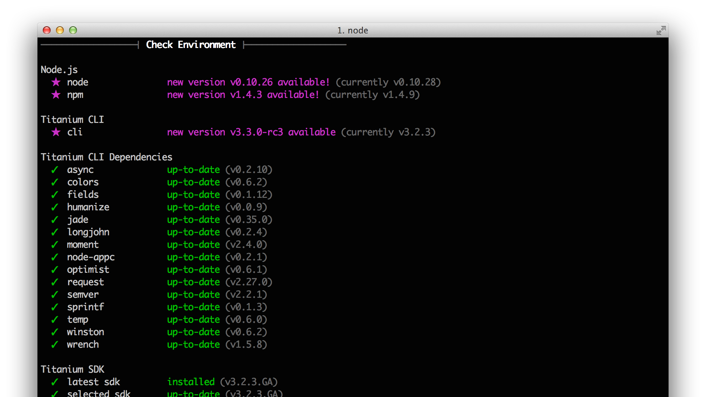
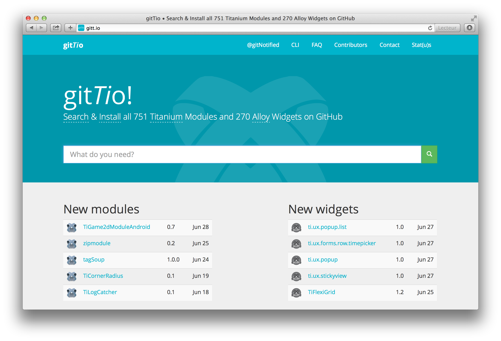

TiConf Amsterdam - Xavier Lacot - June 29th, 2014
TiConf Amsterdam - Xavier Lacot - June 29th, 2014
with @TheBrousse
GUI
CLI
$ npm install -g titanium$ npm install -g git://github.com/appcelerator/titanium.git$ ti sdk helps manage the installed Titanium sdk:
list: list installed sdksinstall: (un-)install a sdk version / update to newestselect: select a specific version by defaultti config: list all optionsti config user.email: retrieves the value of a propertyti config user.email "hello@ticonf.org": sets propertycli.completion: enable cli tab-completion (working soon)genymotion.enabled: enabled to push directly to genymotion without manually calling "adb"{
"user": {
"name": "Xavier Lacot",
"email": "xavier@lacot.org"
},
"app": {
"workspace": "/Users/xavier/Documents/workspace/titanium",
"idprefix": "com.jolicode",
},
[...],
"sdk": {
"selected": "3.2.3.GA"
},
"genymotion": {
"enabled": true
}
}
$ ti setup check: checks the configuration

$ ti setup quick: complete setup (developer name, sdk version, etc.)$ ti setup app: default app values (company app id prefix, publisher, website, etc.)user, network, cli, sdk, ios, android$ ti build -p ios
$ ti build -p android -T dist-playstore -K jolicode.keystore -L jolicode$ ti status displays the current login/user status$ ti info displays a complete diagnosis of the platform:
/path/to/sthing/pony.js
$ ti config -a paths.commands /path/to/sthing/path/to/sthing to the paths.commands config array)
config() method to set the default value of some execution optionvalidate() method called to validate the options passed to the commandrun() method, the "body" of the commandpony for /path/to/sthing/pony.jspony command overrides an earlier pony
/path/to/sthing/soundAfterBuild.js
$ ti config -a paths.hooks /path/to/sthing/path/to/sthing to the paths.hooks config array)
cli.on(), attach listeners to the occurence of hookscli.addHook() is an alias for cli.on()var path = require('path'),
play = require('play');
exports.cliVersion = '>=3.2';
exports.init = function(logger, config, cli, nodeappc) {
cli.on('build.post.compile', function(builder, next) {
play.sound(path.resolve(__dirname, 'sounds', 'trumpet.wav'));
next();
})
};cli.emit:
/**
* @param {String|Array} hookNames - The hook name or an array of many hook names
* @param {Object} [data] - The event payload
* @param {Function} callback - A callback when the event has finished firing
*/
function emit(hookNames, data, callback) cli.on('some.event', {
priority: 999,
post: function() { /* this is the callback */ }
});finished() callback:
exports.run = function (logger, config, cli, finished) {
var i = 0;
while (i < cli.argv.quantity) {
console.log('ponies are flying!');
i++;
}
if (typeof finished == 'function') {
finished()
}
};cli:post-execute hooks never gets called
/path/to/plugin
$ ti config paths.plugins -a /path/to/pluginplugins folder of your project
tiapp.xml:
cli:post-validateextract-i18n command$ ti help i18n
Usage: titanium i18n <subcommand>
CLI to manage internationalizing your Titanium app.
Titanium i18n CLI Subcommands:
extract extract i18n strings from the source code (js and tss files)thanks @fokkeZB
$ npm install -g ti-installr-hook --unsafe-permtiapp.xml:
<property name="installr.api_token">ENTER_INSTALLR_API_TOKEN_HERE</property>
<property name="installr.notify" type="bool">true</property>$ ti build -p ios -T dist-adhoc --installr$ npm install -g ti-testflight-hook --unsafe-permtiapp.xml:
<property name="testflight.api_token">ENTER_API_TOKEN_HERE</property>
<property name="testflight.team_token">ENTER_TEAM_TOKEN_HERE</property>$ ti build -p ios -T dist-adhoc --testflightthanks @davidbankier
$ alloy new task installs this plugin:
exports.installPlugin = function(alloyPath, projectPath) {
var id = 'ti.alloy';
// copy plugin
var srcFile = path.join(alloyPath,'Alloy','plugin',CONST.PLUGIN_FILE);
var destFile = path.join(projectPath,'plugins',id,CONST.PLUGIN_FILE);
exports.copyFileSync(srcFile, destFile);
// add the plugin to tiapp.xml, if necessary
tiapp.init(path.join(projectPath, 'tiapp.xml'));
tiapp.installPlugin({
id: 'ti.alloy',
version: '1.0'
});
};thanks @tonylukasavage
Some magic for lazy developers annoyed with long command lines
$ npm install -g tn --unsafe-perm$ titanium build --platform ios --device-family ipad$ tn ipadStunning features:
$ tn save ship-my-app 172B24F5-1337-1337-1337-D08EB0A7EA5D "Check Norris (6MBV5WT2BD)"$ tn ship-my-app$ tn listthanks @fokkeZB
new: turns a "classic" project into "alloy" stylecompile: runs the alloy compilationgenerate: generates code (controllers, widgets, etc.)
$ npm install -g gittio$ gittio install com.jolicode.pageflow
$ gittio update -g
$ gittio update -t widget$ gittio demo dk.napp.drawer -p iosthanks @fokkeZB
tiapp.xml file
npm install tiapp.xmlvar tiapp = require('tiapp.xml').load('./tiapp.xml');
tiapp.id = 'com.other.name';
// or whichever of tiapp.xml properties
tiapp.write();thanks @tonylukasavage
$ npm install -g ticonsimagemagick.
$ ticons -h
Usage: ticons command <args> [options]
Commands:
icons [options] [input] generate icons
splashes [options] [input] generate splash screens (aka launch images)
assets [input] generate missing densities for input asset(s)thanks @fokkeZB
tetanize:
$ npm install -g tetanize$ cd /path/to/underscorejs
$ tetanizetipi:
tetanize-generated modules installed
$ npm install -g tipi
$ tipi install underscorethanks @_dawi_
console.log statements
$ npm install -g ti-stealth$ ti-stealth enable [--levels <levels>] [--not-levels <levels>]
$ ti-stealth restore
console.log and Ti.Api.info|debug|error|etc. in Resources
alloy.jmk file shows how to automate logs removal in productionand...
guess what...
thanks @fokkeZB